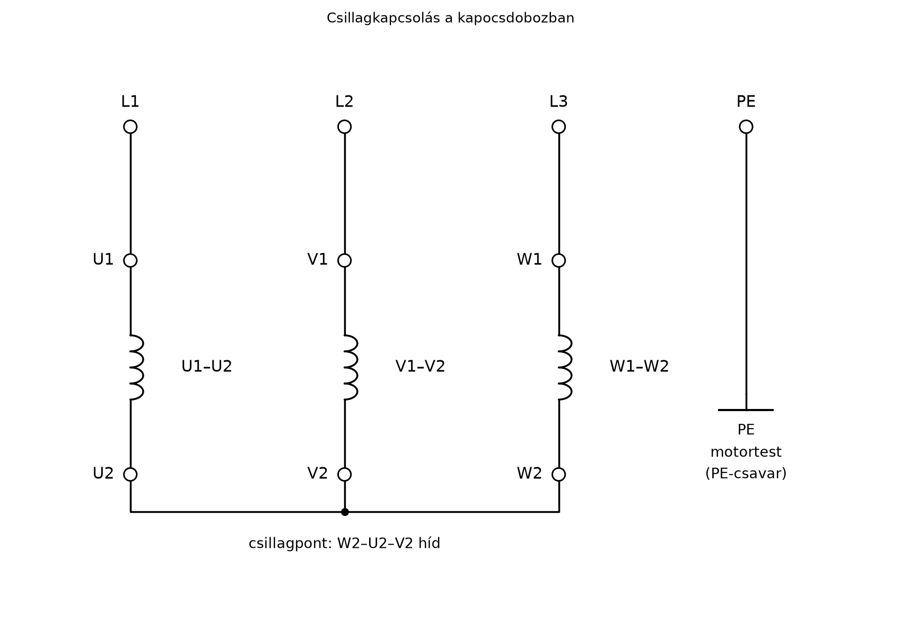
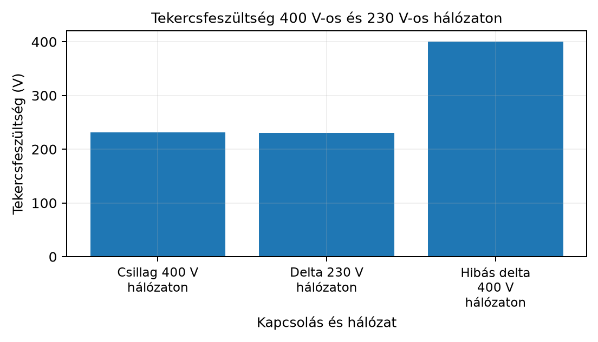

Egy új háromfázisú motort szállítanak a műhelybe. A dobozon ott az adattábla: „230/400 V, Δ/Y, 1,5 kW, cos φ = 0,82”. A szerelő kinyitja a kapocsdobozt, és hat sorkapcsot lát, rajta gyárilag elhelyezett, áthidalható fémlemezekkel. Ha a hidakat rosszul teszi fel, a motor zúgni kezd, túlmelegszik, túláramvédő leold, rosszabb esetben a tekercs szigetelése károsodik. Ha pedig a tápvezeték fázisait rossz sorrendben köti, a ventilátor visszafelé forog, a szivattyú nem szállít, a megmunkálógép kiszakítja a munkadarabot. Ez az alfejezet pontosan ezt a két helyzetet tanítja meg: hogyan kell a motor tekercseit a hálózati feszültséghez illeszteni a kapocsdobozban, és hogyan kell a forgásirányt megbízhatóan beállítani és ellenőrizni.
A képzeletbeli kapocsdobozban hat, két sorba rendezett csavar vagy lapos csatlakozó van. A szabványos kapocstáblán az egyik sorban W2, U2, V2, a másikban U1, V1, W1 felirat olvasható, egymás alatt eltolva (felül U1, V1, W1, alul eltolva W2, U2, V2: W2 az U1 alatt, U2 a V1 alatt, V2 a W1 alatt; ellenőrizendő: MSZ EN 60034-8 ábrája és a gyártói kapocstábla). A motor belsejében három, egymástól független tekercs helyezkedik el: az egyik tekercs két vége az U1 és U2, a másodiké a V1 és V2, a harmadiké a W1 és W2 kapocsra van kivezetve. A gyártó a kapocshidakkal lehetővé teszi, hogy a hat kapcsot kétféleképpen kössük össze: csillagba (Y) vagy deltába (Δ). Ezért ugyanaz a motortest két különböző hálózati feszültséghez használható, ha a tekercsfeszültség megfelelő.
Definíció. A kapocsdoboz a motor áramkötéseinek csatlakoztatására szolgáló tér, ahol a tekercsek végei sorkapcsokra vannak kivezetve, és hidakkal alakítható ki a tekercsek kapcsolása.
Szabály. A kapocsjelölések a mai szabvány szerint: a tekercs kezdete U1, V1, W1, a vége U2, V2, W2. Régi motorokon és terveken gyakran U, V, W – X, Y, Z jelölést találsz (U1→U, U2→X, V2→Y, W2→Z; ellenőrizendő: régi MSZ/DIN jelölés), a megfeleltetést mindig méréssel ellenőrizd. (Lásd a Motorok és transzformátorok rajzjelei, kapocstáblák alfejezetet.)
A kapocsdoboz bekötését a következő kapcsolási rajzok mutatják.

A kapcsolási rajz leírása: a felső tápsor L1, L2, L3 az U1, V1, W1 kapcsokra csatlakozik; a három függőleges tekercs U1–U2, V1–V2, W1–W2; az alsó végek (U2, V2, W2) össze vannak kötve, ez a csillagpont – a kapocstáblán ez a W2–U2–V2 sor vízszintes hídja. A PE-vezető a motortest PE-csavarjára csatlakozik.
A kapcsolási rajz leírása: ugyanaz a hat kapocs, de most a szabványos kapocstábla három függőleges hídja köti össze a tekercseket zárt háromszögbe: U1–W2, V1–U2 és W1–V2; a tápfázisok az U1, V1, W1 kapcsokon maradnak, a PE a motortesten.
A valódi kapocstáblán a hat kapocs két, egymás alatti sorban van: a felső sorban U1, V1, W1, az alsóban eltolva W2, U2, V2 (W2 az U1, U2 a V1, V2 a W1 alatt; a fizikai elrendezés gyártónként eltérhet). Így a csillaghíd egyetlen vízszintes sáv az alsó soron, a deltahidak pedig három függőleges sáv. Az alábbi ábra a két hídkiosztást a fejezet két motorjával mutatja 400 V-os hálózaton: a 230/400 V Δ/Y motort csillagba kötjük (egy tekercsre ≈ 231 V jut), a 400/690 V Δ/Y motort deltába (egy tekercsre 400 V jut). Az interaktív változatban kiválaszthatod az adattáblát és a hídkiosztást; a kijelző mutatja a tekercsfeszültséget és azt, hogy ez megfelelő, túl nagy (a motor túlmelegszik) vagy túl kicsi (nyomatékhiány). Az „L1–L2 csere” gomb a forgásirányt fordítja meg, a hidakat nem változtatja.
A feszültségviszonyokat szemlélteti a következő számított oszlopdiagram.

Törvény. A háromfázisú tekercselésnél a fázistekercsre jutó feszültség: - csillagkapcsolásban , ahol a vonali feszültség; - deltakapcsolásban .
Szabály. A motor adattáblájának kettős feszültségjelölése mindig a delta feszültség / csillag feszültség sorrendet követi (például 230/400 V Δ/Y vagy 400/690 V Δ/Y). A kisebbik feszültség a tekercs névleges feszültsége delta kapcsolásban, a nagyobbik pedig ugyanannak a tekercsnek a csillag kapcsolásban megengedett feszültsége.
Példa. Egy motor adattáblája: 230/400 V Δ/Y. Ez azt jelenti, hogy a tekercs 230 V-ra készült. Ha a hálózat vonali feszültsége , akkor csillagkapcsolásban , tehát a motor csillagban köthető. Ha valaki deltába kötné, akkor jutna a 230 V-os tekercsre, ami nagy áramot és gyors túlmelegedést okoz.
Számítás. Legyen a hálózat . Csillagkapcsolásban a tekercsfeszültség: Ez illik a 230 V-os tekercshez. Deltakapcsolásban , ami nem illik. Tehát a 230/400 V Δ/Y motort a 400 V-os hálózaton csillagba kell kötni.
Megjegyzés. Ha a helyszínen csak 230 V vonali feszültségű háromfázisú hálózat lenne (ritka, egyes külföldi vagy régi rendszerek), ugyanezt a motort deltába kellene kötni, mert akkor .
A háromfázisú aszinkron motor forgásiránya a tápláló fázisok sorrendjétől függ. A forgó mágneses mező iránya a fázissorrenddel egyezően forog; ha a fázissorrend megfordul, a forgó mező is megfordul, és vele a tengely is.
Szabály. A forgásirány megváltoztatásához a motor betápláló oldalán bármely két fázist fel kell cserélni (például L1 és L2, L1 és L3, vagy L2 és L3). A kapocsdobozban a hidakat nem szabad megváltoztatni; azok a feszültséghez illesztett kapcsolást adják, nem a forgásirányt.
Gyakorlati megvalósítás. Ha a motort közvetlenül kötjük, a kapocsdobozban a tápfázisok két vezetékét kicseréljük. Ha mágneskapcsolóról vagy motorvédő kapcsolóról tápláljuk, a cserét a mágneskapcsoló betápláló oldalán vagy a motorvédő kapcsoló után végezzük, mindig azonosítva a fázisokat. A fázissorrendet célszerű fázissorrend-mérővel is ellenőrizni.
Figyelem. A forgásirányváltást kizárólag feszültségmentes állapotban, a tápellátás biztosított kikapcsolása után szabad elvégezni. A forgásirányt a hajtási tengelyvég felől nézve adjuk meg. Ha az L1–L2–L3 (jobbforgású) fázissorrendet az U1–V1–W1 kapcsokra kötjük, a motor ebből a nézőpontból az óramutató járásával egyezően (jobbra) forog (MSZ EN 60034-8; ellenőrizendő: pontos szakasz). Ezért érdemes bekötés előtt fázissorrend-mérővel ellenőrizni a betáplálást.
Mielőtt a hidakat feltennénk és a tápvezetékeket csatlakoztatnánk, ellenőrizni kell a motor villamos állapotát. A mérések védik a motort és a szerelőt is.
Szabvány. A kisfeszültségű villamos berendezések ellenőrzésére az MSZ HD 60364-6 sorozat vonatkozik; a forgógépek kapocsjelölését az MSZ EN 60034-8 szabályozza. A méréseknél a határértékeket mindig az aktuális szabvány és a gyártói adatlap alapján kell meghatározni. (ellenőrizendő: aktuális kiadás, határértékek)
Gyakorlati mérések:
Szabály. A mérés előtt mindig a feszültségmentesítés öt biztonsági szabályát kell alkalmazni: lekapcsolás, visszakapcsolás elleni biztosítás, feszültségmentesség ellenőrzése, földelés és rövidre zárás (ha előírt), szomszédos feszültség alatti részek lefedése.
Biztonsági korlát. A feladat tanműhelyi (törpefeszültségű) környezetre vagy jogosult oktató felügyeletére vonatkozik; hálózati feszültségen önállóan ne végezd. Hálózati feszültségű munkát csak jogosult, arra képesített személy végezhet, a hatályos előírások szerint.
Cél. Háromfázisú aszinkron motor bekötése a hálózati feszültséghez illesztett csillag- vagy deltakapcsolásban, a forgásirány ellenőrzése.
Eszközök, anyagok: motor (ismert adattáblával), kapocshidak, csavarhúzó, villáskulcs, kétpólusú feszültségvizsgáló (MSZ EN 61243-3), multiméter, szigetelési ellenállás-mérő, fázissorrend-mérő (opcionális), védőkesztyű, védőszemüveg, feszültségmentesítő eszközök, jegyzőkönyv.
Lépések:
Ellenőrzési pontok: - A szigetelési ellenállás minden körben a határérték felett van. - A tekercsellenállások közel azonosak. - A hidak pontosan a kiválasztott kapcsolásnak felelnek meg. - A tápvezetékek a U1, V1, W1 kapcsokra csatlakoznak. - A védővezető csatlakoztatva van. - A forgásirány a berendezés követelményének megfelelő. - A kapocsdoboz fedele vissza van helyezve, a tömítések sértetlenek.
Tünet. Egy új, 1,5 kW-os motort a szerelő bekötött, de a motor hangos, erősen melegszik, és a motorvédő kapcsoló néhány másodperc után leold. A tengely alig forog, vagy nem indul el.
Hipotézis. A motor adattáblája 230/400 V Δ/Y, a hálózat 400 V. A szerelő valószínűleg deltába kötötte a motort, mert a kapocsdobozban a gyári híd gyárilag delta állásban volt, és nem ellenőrizte az adattáblát.
Mérés. Feszültségmentesítés után a kapocsdobozban a hidak delta bekötést mutatnak (U1–W2, V1–U2, W1–V2). A motor adattáblája: Δ 230 V / Y 400 V. A számított tekercsfeszültség delta bekötésben 400 V, ami a 230 V-os tekercsre túl nagy.
Ok. A motor tekercsére a névleges 230 V helyett 400 V jut, ezért a tekercs erős telítésbe kerül, a felvett áram megnő, a motor túlmelegszik és a túláramvédelem leold.
Javítás. Feszültségmentes állapotban a hidakat csillag kapcsolásra kell átrendezni (U2–V2–W2 közösítése), majd a tápvezetékeket visszakötni a U1, V1, W1 kapcsokra. Ezután a motor normál áramfelvétellel, a névleges fordulatszám közelében fog járni.
Megelőzés. Mindig az adattábla alapján, a hálózati feszültséggel összevetve válasszuk ki a kapcsolást. A bekötés után rövid próbaindítással ellenőrizzük az áramfelvételt (pl. lakatfogóval), és hasonlítsuk össze az adattáblán szereplő névleges árammal.
Egy épületgépészeti kivitelezésen egy légkezelő ventilátort szereltek. A villanyszerelő bekötötte a motort, és a próbaindításnál a ventilátor visszafelé forgott: a levegőt a kifúvó ág felől szívta. A hiba a tápvezetékek bekötésekor történt: a mágneskapcsoló kimeneti oldalán az L1 és L2 fázist felcserélték. A megoldás egyszerű volt: feszültségmentesítés után a mágneskapcsoló után két fázist megcseréltek. A motor ezután a helyes irányba forgott, a légcsatorna nyomásviszonyai a tervezettnek megfelelőek lettek. Az eset tanulsága: a forgásirányt mindig a teljes rendszerrel együtt kell ellenőrizni, nem elég a motort magában beindítani.
1. feladat (A). Definiáld a kapocsdoboz szerepét, és sorold fel a hat kapocs jelölését a mai szabvány szerint.
2. feladat (A). Egy háromfázisú hálózat vonali feszültsége 400 V. Mekkora a csillagkapcsolású motor tekercsfeszültsége? Számítsd ki.
3. feladat (B). Adott egy motor, adattáblája: 230/400 V Δ/Y, névleges áram 3,4 A. A rendelkezésre álló hálózat 400 V. Milyen kötést választanál? Rajzold fel a kapocsdoboz bekötését (csillag vagy delta), és jelöld a tápvezetékek csatlakozási pontjait.
4. feladat (B). A motort csillagba kötötted, de a forgásirány ellentétes a kívánttal. Írd le lépésről lépésre, mit teszel, milyen biztonsági szabályok betartásával.
5. feladat (C). Egy motor kapocsdobozában a következő hidak vannak: U1–W2, V1–U2, W1–V2. A motor adattáblája: 400/690 V Δ/Y. A hálózat feszültsége 400 V. Helyes-e a bekötés? Indokold számítással. Ha nem, mit változtatnál?
6. feladat (D). Bekötés előtt szigetelési ellenállást mérsz. Az U1–test mérés 0,8 MΩ, a V1–test mérés 0,9 MΩ, a W1–test mérés 12 MΩ. A tekercsellenállások: U1-U2 = 4,2 Ω, V1-V2 = 4,1 Ω, W1-W2 = 4,15 Ω. A motor névleges feszültsége 400 V, a környezet tiszta. Mi a teendőd? Milyen hibára gyanakszol, és milyen további mérést végeznél?
Önellenőrzés – válaszok:
Feladatok megoldásai:
1. feladat. A kapocsdoboz a motor tekercs végeinek csatlakoztatására szolgáló sorkapocs-tér, ahol a tekercsek kapcsolása hidakkal állítható be. A kapocsjelölések: U1, V1, W1 (kezdetek) és U2, V2, W2 (végek).
2. feladat.
Adott:
.
Keresett:
csillagban.
Képlet:
.
Behelyettesítés:
.
Ellenőrzés: csillagban a fázisfeszültség mindig kisebb a vonalinál, ez
megfelel.
3. feladat. A motor 230/400 V Δ/Y jelölése: a tekercs 230 V-os. 400 V-os hálózaton csillagkapcsolást kell választani, mert . A kapocsdobozban U2–V2–W2 közösítendő, a táp L1→U1, L2→V1, L3→W1. A rajz megegyezik a fenti csillag kapcsolási rajzzal.
4. feladat. Feszültségmentesítés az öt biztonsági szabállyal (a feszültségmentesség ellenőrzésével együtt, a vezetékekhez nyúlás előtt). A motor forgásiránya ellentétes, ezért a betápláló vezetékek közül kettőt (például L1 és L2) a kapocsdobozban felcserélünk; a hidakhoz nem nyúlunk. Ellenőrizzük a kötések meghúzását, visszahelyezzük a fedelet, megszüntetjük a földelést/rövidzárat és a lezárást, majd rövid próbaindítással ellenőrizzük a forgásirányt. Dokumentáljuk a cserét.
5. feladat. A hidak delta kapcsolást mutatnak (U1–W2, V1–U2, W1–V2). Motor adattábla: 400/690 V Δ/Y, tehát a tekercs névleges feszültsége 400 V. Hálózat: 400 V. Deltakapcsolásban , ami pontosan a tekercs névleges feszültsége, tehát a bekötés helyes. Ha csillagba kötnénk, akkor , ami alacsony, a motor nyomatéka jelentősen csökkenne, és túlterhelhető lenne.
6. feladat. A szigetelési ellenállás U1 és V1 tekercs–test között 0,8–0,9 MΩ, ami a tananyagban használt 1 MΩ-os példahatár alatt van, ezért a motor ebben az állapotban nem helyezhető üzembe (a pontos határ a gyártói adat és a hatályos szabvány; ellenőrizendő); a W1–test 12 MΩ. A tekercsellenállások közel azonosak, tehát a tekercsek villamosan épek. A gyanú: a motor nedves vagy szennyezett, esetleg a szigetelés az U és V fázis környékén gyengült. Teendő: a motort ne kapcsold be; mérd meg a tekercsek közötti szigetelést is (U–V, V–W, W–U); vizsgáld meg a kapocsdobozt nedvességre, száríttasd ki a motort (pl. meleg levegővel), majd a névleges feszültséghez illő vizsgálófeszültséggel (a 400 V-os motornál 500 V DC) ismételd meg a mérést. Csak a határérték feletti szigetelési ellenállás esetén helyezhető üzembe. A pontos határértéket a gyártói adatlap és az aktuális szabvány adja meg. (ellenőrizendő: határérték)
A háromfázisú aszinkron motor kapocsdobozában a hat kivezetés (U1, V1, W1 kezdetek, U2, V2, W2 végek) hidakkal csillag- vagy deltakapcsolásba köthető. Csillagkapcsolásnál a tekercsek végeit közösítjük, és a táp a kezdetekre csatlakozik; ekkor a tekercsfeszültség . Deltakapcsolásnál U1–W2, V1–U2, W1–V2 hidak vannak, és a tekercsfeszültség . A motor adattáblájának kettős feszültségjelölése (pl. 230/400 V Δ/Y) meghatározza, hogy a tekercs milyen feszültségre készült: 400 V-os hálózaton a 230/400 V-os motort csillagba, a 400/690 V-os motort deltába kell kötni. A forgásirányt a betápláló fázisok sorrendje szabja meg; a forgásirányváltáshoz két tápvezetéket kell felcserélni (például L1–L2), a motoron belüli hidakat nem szabad megváltoztatni. Bekötés előtt szigetelési ellenállást és tekercsellenállást kell mérni, a kapcsolást az adattáblával egyeztetni, és a védővezetőt csatlakoztatni. Továbbvitt eredmény. A csillag–delta kapcsolás és a forgásirányváltás ismerete közvetlenül szükséges az Indítás: közvetlen, csillag–delta, lágyindító, csúszógyűrűs, az Egyfázisú aszinkron motorok és a Motor kapocsbekötése és beüzemelése alfejezetekben, ahol a kapcsolási módokat vezérlési és gyakorlati szinten is alkalmazzuk.
A kapocsdobozos csillag–delta kapcsolás logikája és a forgásirányváltás elve stabil elektrotechnikai alapismeret. A kapocsjelöléseket az MSZ EN 60034-8, a villamos berendezések ellenőrzését az MSZ HD 60364-6 sorozat, a mérések módszereit az MSZ EN 61557 sorozat szabályozza; a határértékek (szigetelési ellenállás, csavarnyomaték) a mindenkori szabványkiadás és a gyártói adatlapok függvényei, ezért azokat a felhasználás előtt ellenőrizni kell. A példában szereplő szigetelési ellenállás határértékek tájékoztató jellegűek, és nem helyettesítik a gyártói vagy szabványos előírást.